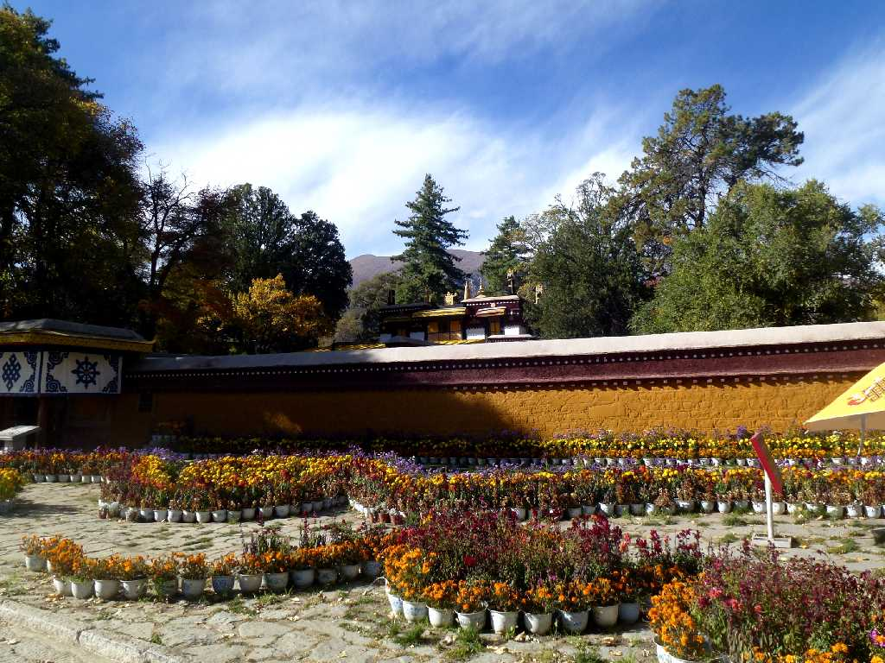
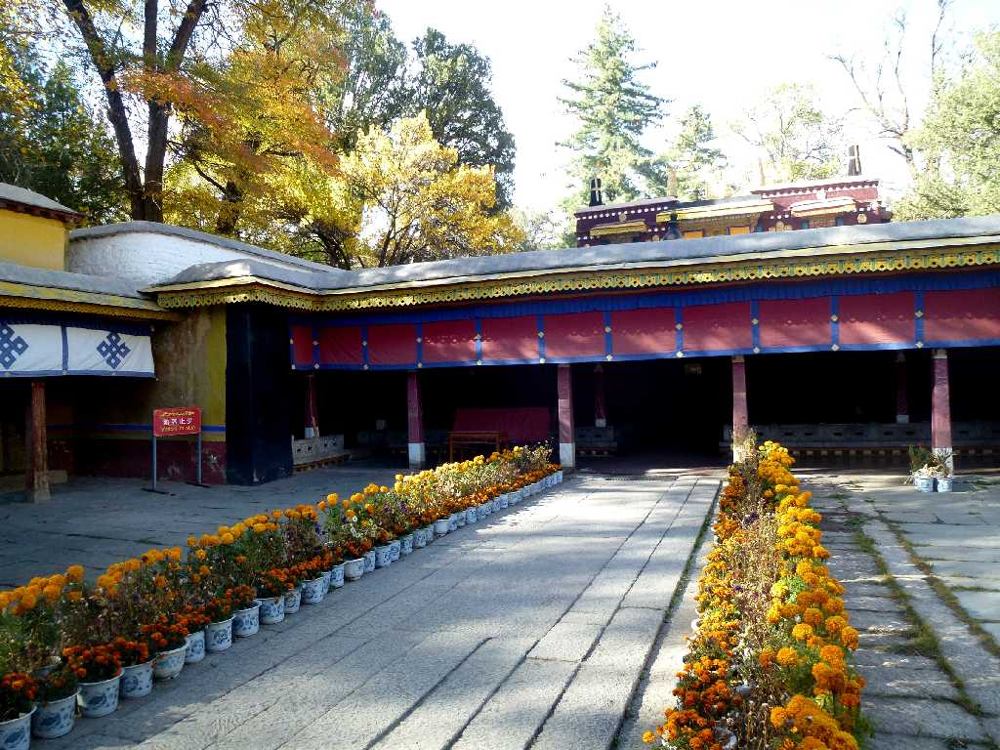
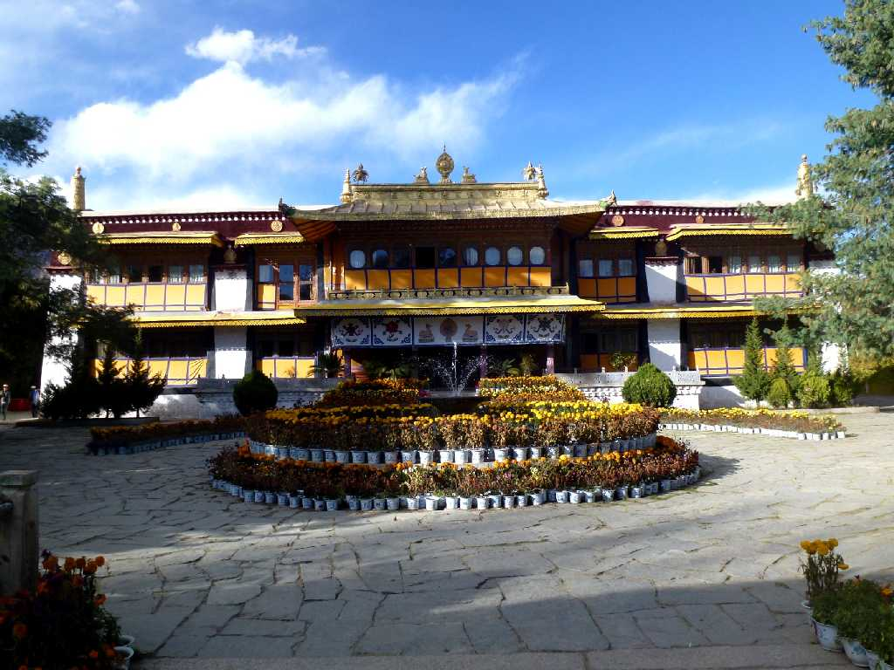
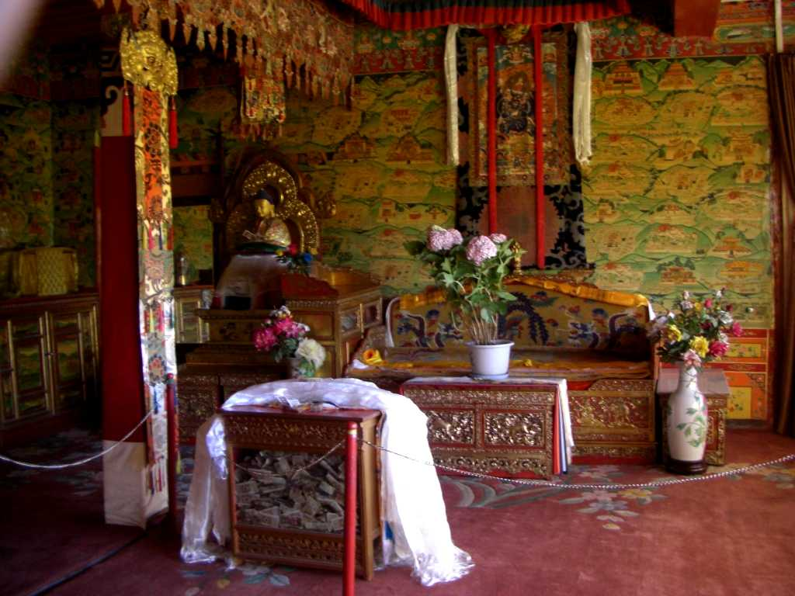

Kelsang Phodrang Norbulinka Lhasa Tibet 西藏 拉萨 罗布林卡 格桑颇章
ダライラマ７世により当時のラサ郊外の林の中に１７５５年創られた最初の夏の離宮

Kelsang Phodrang

Summer Palace Dalai Lama 14th Norbulinka Lhasa 拉萨 罗布林卡
１９５６年に創られたダライラマ１４世のための離宮

Summer Palace Dalai Lama 14th
October 20 2014 Norbulinka Gate